Maple basics
Maple is basically a graphing calculator on steroids. Each time you press the Enter key, Maple tries to interpret what you have just typed.
| > | 2 + 2; |

| > | 4 * 3; |
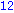
Expressions are usually simplified immediately. Note that every command above ends with a semicolon. You MUST use a semicolon (;) or colon (:) at the end of every Maple command. (A colon prevents Maple from printing the result on to the screen.)
| > | sin(x)^2 + cos(x)^2; |
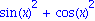
| > | simplify( % ); |
Sometimes simplify is needed to nudge Maple along. Note that % stands for "most recent result".
Here are some other expressions.
| > | Pi; |
| > | sin(Pi); |

| > | 22/7; |
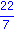
| > | sin(22/7); |
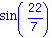
Here we see a very important principle: all numbers and expressions involving numbers are represented exactly in Maple. For example, the number Pi is known to Maple (Pi MUST be capitalized). It would take infinitely long to write out all the digits of Pi, and a number such as 3.1416 is just an approximation. So to Maple, Pi is just Pi. But one of the properties of Pi is that sin(Pi) equals zero, and Maple understands this.
This holds for the fraction 22/7 as well as the number sin(22/7) above. There is no simpler way to exactly represent these values, so Maple reports them back.
Sometimes, we really do want to see part of the decimal expansion of a number. Here is how to do this.
| > | evalf( 22/7 ); |
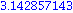
| > | evalf( Pi ); |
| > | evalf( Pi, 50 ); |
The evalf command converts an exact number into one of these expansions, which are known as floating-point numbers. You can ask for as many digits as you like, though you might not want to wait for the result!
Maple has an extensive online help system. To get help on a specific command, use the syntax
| > | ?exp |
Some of the help is dense and technical. You might want to just scroll down to the examples.
Worksheets
You interface with Maple through one or more worksheets. This document is a worksheet (or was created from one if you are reading this on the web). Worksheets can have text mixed in with Maple commands. Command lines are distinguished by font and by the > character (prompt) at the beginning of the line. A worksheet may also be divided into nested sections, as this one is. You should get used to using sections and text lines to make the content of your worksheets clear. Worksheets without text and sensible sections may not receive full credit.
You can go back and edit or add Maple commands or text in a worksheet anywhere and at any time. After a few rounds of this editing, the statements may have been executed in an order different from how they appear. If you get confused about the order, you can execute the restart command, which re-initializes Maple. It's a good idea to put a restart at the beginning of every worksheet or new problem, because statements from several worksheets all affect and interact with one another.
Variables and assignments
If you use a letter or a whole name in an expression, maple assumes it's a variable.
| > | ln( x ); |
| > | exp( 1+A ); |
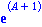
| > | arctan( a_long_variable_name ); |
You can assign a value to a variable using :=.
| > | y:= ln(2); |
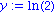
| > | exp(y); |
Here is a common type of mistake.
| > | t = 2*Pi; |
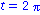
| > | cos( t ); |
You must remember to use the colon for assignment.
| > | t:= 2*Pi; |
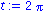
| > | cos( t ); |

You can undo assignment as follows:
| > | t := 't'; |
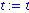
| > | cos( t ); |
If you want to substitute for a variable without making a permanent assignment, you have a couple of choices.
| > | f:= %; |
| > | subs( t=2*Pi, f ); |
| > | eval( f, t=2*Pi ); |

Notice how eval tends to do more simplification. It's usually the better choice.
Collections
| > | restart: |
Several items (numbers, variables, expressions, etc.) separated by commas form a sequence. A sequence can be assigned to a name.
| > | A,1,sin(exp(1)),A; |
| > | s:= %; |
If you enclose a sequence in brackets [], you get a list. Many Maple commands accept lists as arguments.
| > | [ 2, x ]; |
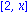
| > | L:= [ s, s ]; |
You can get at a specifc element or sublist this way:
| > | L[1]; |
| > | L[2..4]; |
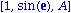
If you enclose a sequence in braces {}, you get a set. In a set, order isn't preserved and duplicates are removed.
| > | { A, B, C, s }; |
To convert a list or set back into a sequence, there is a special syntax:
| > | op( % ); |
Graphics
There are lots of graphics commands and options. Here are just a few.
| > | plot( sin(t), t=0..4*Pi ); |
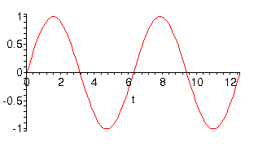
| > | plot( [cos(t),sin(t),t=0..2*Pi], scaling=constrained ); |
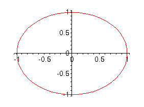
| > | p1:= plot( sinh(x), x=-2..2 ): |
| > | p2:= plot( cosh(x), x=-2..2, color=blue ): |
| > | with( plots ): |
Warning, the name changecoords has been redefined
| > | display({p1,p2}); |
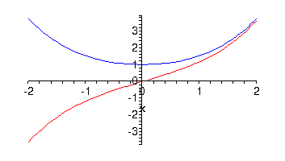
A word about this: Some Maple commands are not in the "core" and must be loaded from special packages. These packages are loaded using with as above.
Calculus
Limits, differentiation and integration are easy.
| > | limit( sin(x)/x, x=0 ); |

| > | limit( exp(-x), x=infinity ); |

| > | diff( ln(x), x ); |
| > | diff( A*sin(t) + B*cos(t), t ); |
| > | int( tan(x), x ); |
| > | int( exp(x), x=-1..2 ); |
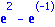
Notice the two different forms of int for indefinite and definite integrals. Also notice that Maple leaves out the constant of integration in the indefinite case!
Some integrals don't have a simple solution, and Maple just gives up.
| > | int( exp(x+1/x^2), x ); |
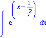
Solving equations
One of the more useful aspects of Maple is in solving equations. Here are some examples.
| > | restart: |
| > | solve( x^2=x, x ); |
| > | solve( sin(u)=cos(u), u ); |

| > | y:= x^4 - 4*x^2: |
| > | solve( y=1, x ); |
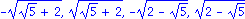
| > | evalf( [%] ); |
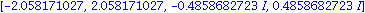
Notice that Maple may give complex numbers as answers, and may not give all the answers.
If solve fails to give a simple enough expression, you might try fsolve instead.
| > | y:= x^4 + x^3 + 2*x^2; |

| > | solve( y=1, x ); |
| > | plot( y, x=-1..1, -2..2 ); |
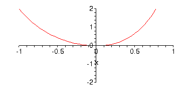
| > | fsolve( y=1, x ); |
You can also do systems of equations with multiple variables.
| > | f:= A + 3*B: |
| > | g:= A - 2*B: |
| > | solve( {f=1,g=0}, {A,B} ); |
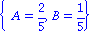
| > | f:= sin(s+t) - exp(s)*t: |
| > | g:= s^2 - t: |
| > | fsolve( {f=0,g=2}, {s,t} ); |
You can also tell fsolve where to look.
| > | fsolve( {f=0,g=2}, {s=-1..1,t=-2..0} ); |